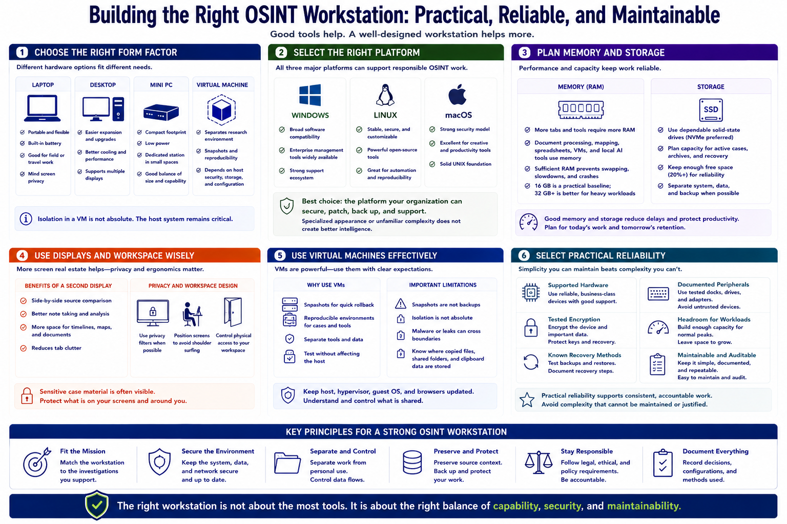

Hardware and Operating System Choices
Connecting to LMS... Progress: in progress

Narration
A laptop provides portability, while a desktop offers easier expansion and larger displays. A mini PC can serve as a compact dedicated station. A virtual machine can separate research software and files from the host, but it still depends on host security, storage, and disciplined configuration.
Windows, Linux, and macOS can all support responsible OSINT work. The best choice is the platform the organization can secure, patch, back up, and support. Specialized appearance or unfamiliar complexity does not create better intelligence.
Memory requirements depend on browser tabs, local document processing, mapping, spreadsheets, virtual machines, and approved local AI tools. Sufficient memory prevents constant swapping and unstable multitasking. Storage should use dependable solid-state media with capacity for active cases and recovery operations.
A second display can improve note taking and source comparison, but screen privacy and physical workspace design matter. Portable systems may need privacy filters or careful placement when sensitive case material is visible.
Virtual machines are useful for snapshots, reproducible environments, and tool separation. Snapshots are not backups, and isolation is not absolute. Keep the host, hypervisor, guest system, and browsers updated, and understand where copied files, shared folders, and clipboard data are stored.
Select practical reliability. Use supported hardware, tested encryption, known recovery methods, and documented peripherals. Build enough headroom for normal workloads without buying complexity that cannot be maintained or audited.